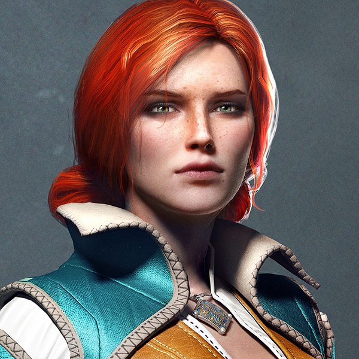

Általanosan
Karakterek
Riviai Geralt
Ríviai Geralt (lengyelül: Geralt z Rivii), avagy Gwynnbleid (ezt a nevet a driádoktól kapta, mely az Ősi Nyelven azt jelenti: Fehér Farkas) egy Vaják és főszereplője Andrzej Sapkowski könyvsorozatának és azok adaptációinak (ide értve a "The Witcher" PC játékot is.) Van, ahol a Blavikeni mészárosként vált hírhedté.
Ciri
Cirilla Fiona Elen Riannon vagy becenevén Ciri (Tündéktől kapott nevén, Zireael) 1253 körül született Pavetta és Emhyr var Emreis lányaként, Calanthe unokájaként. Hercegnői nevelést kapott mindaddig míg 1263-ban Cintrát meg nem támadta Nilfgaard. Ezekután találkozott a hírhedt vajákkal, Ríviai Geraltal aki befogadta.

Vengerbergi Yennefer
1173-ban született varázslónő Vengerbergből, Aedirn fővásorából. Korának leghatalmasabbika, Ríviai Geralt igaz szerelme, Ciri nevelőanyja, akire lányaként tekint. Triss Merigold jó barátja.
Kökörcsin
Kökörcsin a költő, trubadúr, bárd, és a Vaják, Ríviai Geralt legjobb barátja. Az oxenfurti akadémián négy évig tanult zenét és költészetet (tanulmányai alatt „kiérdemelte” a munkakerülő, iszákos és idióta jelzőket), később professzor lett (miután a vizsgákat kivételes eredménnyel teljesítette), és egy évig tanulókat oktatott, ezt követően elhagyta az akadémiát, hogy a világot rója. Időnként még visszatér Oxenfurtba, hogy a látogatóknak órákat adjon.
Vesemir
Vesemir a legidősebb és legtapasztaltabb Vaják Kaer Morhen-ben. A legtöbb Vaják számára amolyan apai szerepet tölt be. A teleit az erődben törti, majd amint tavaszodik,útra kel. Egy fantasztikus kardforgató, és szörnyismerő.

Triss Merigold
A Maribor-i Triss Merigold egy varázslónő, akit a „domb tizenegyedik áldozatának” hívnak, mivel tévesen úgy hitte, hogy a Soddeni Csata alatt megölték. Yennefer és a Vaják, Geralt barátja, az utóbbiba boldogtalanul szerelmes. Egy ideig ő vigyázott Cirire Kaer Morhenben, akinek Triss olyan, mint egy idősebb testvér.
